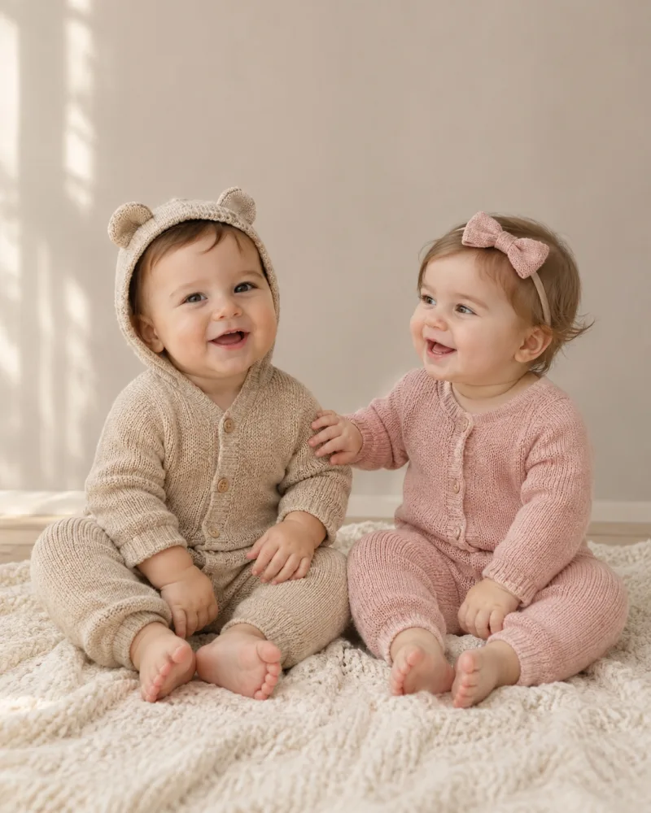

Estamos preparando
algo muy tierno.
Nuestra tienda online está creciendo,
pasito a pasito.
Estamos creando un lugar lleno de ropita, juguetes y pequeños detalles para acompañar a tus bebés, niñas y niños de 0 a 5 años.
Lo estamos haciendo con mucho amor.
Pronto nos conoceremos.
